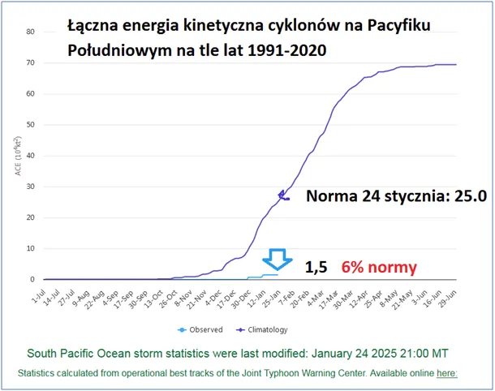
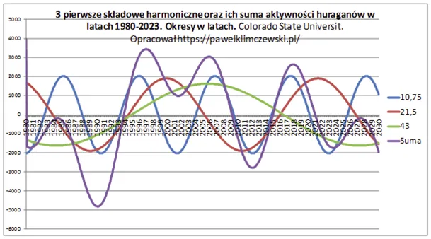
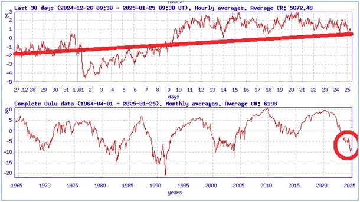

Panie Trzaskowski, gdzie te cyklony ?
Gdy my spokojnie wyglądamy przedwiośnia na południowej półkuli lato wchodzi w swą szczytową fazę, a wraz z nim sezon cyklonów dociera do swego apogeum. Tymczasem Południowy Pacyfik śpi w letargu, schłodzony wydał z siebie zaledwie 6% energii cyklonów w stosunku do normy sezonowej. Mamy przed sobą jeszcze kilka miesięcy na nadrobienie tych zaległości, ale szanse są małe, Pacyfik spokojny i chłodny.

Wpisuje się to w mój model, który przewiduje spadek termiki planety i spadek energii cyklonów w najbliższych dekadach opisany tu: https://pawelklimczewski.pl/2024/10/27/cyklony-i-slonce-postscriptum/

To z kolei wpisuje się w to notowany już od miesiąca spadek aktywności Słonecznej, ilustrowany na wykresie ostatnim wzrostem promieniowania kosmicznego na powierzchni Ziemi. Od ok. 1990 promieniowanie to pulsuje w cyklach 11 letnich, ale każdy cykl daje wyższe odczyty w swych minimach.

Prognoza na kolejne dekady jest tu: https://pawelklimczewski.pl/2024/02/03/kosmiczna-prognoza-do-2045-globalne-oziebienie/ To promieniowanie jest odpowiedzialne za powstawanie chmur i blokowanie energii Słonecznej do coraz to bardziej białej Ziemi z punktu widzenia Słońca. Biel chmur bezpowrotnie odbija słoneczną energię w Kosmos na zawsze. Gdy chmur jest mniej bardziej niebieska planeta pochłania światło do oceanów i je nagrzewa dając więcej cyklonów, tak to się kręci.
Paweł Klimczewski